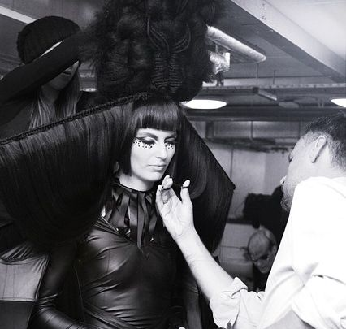

Fryzjerzy Gwiazd * Fryzjerzy Artystyczni
Zadania specjalne, to nasza CODZIENNOŚĆ
Nasze wieloletnie doświadczenie i pasja do włosów, pozwoliły nam stworzyć markę, którą znają największe gwiazdy w kraju!
Działamy od 2010 roku - przez 11 lat nasz zespół stale się powiększał, a udział w szkoleniach na całym świecie dał nam zestaw umiejętności, które wykorzystujemy najlepiej jak potrafimy.
Pracujemy na planach zdjęciowych, dużych eventach oraz oczywiście - w naszym studiu w Warszawie.
Jesteśmy perfekcjonistami.
